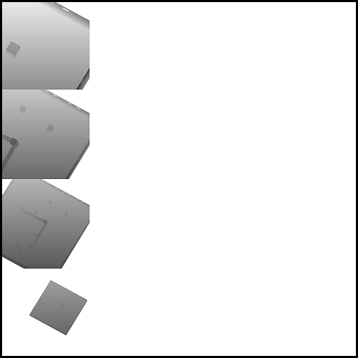
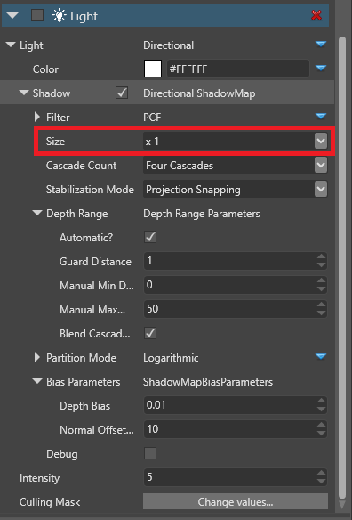

Свет не отбрасывает тени
Если вы включили тени на источнике света в своей сцене, но он не отбрасывает тени, убедитесь, что в атласе теней достаточно места. Возможно, вам придется уменьшить размер теней в свойствах компонентов освещения, чтобы создать пространство. Более подробную информацию о тенях и атласе теней см. Графика - Тени.
Сравнение атласа теней.
| Размер: 2x | Размер: 1x |
|---|---|
 |
 |
| Этот источник света использует весь атлас теней. Это значит, что другие источники света не будут отбрасывать тени, поскольку в атласе не осталось места. | Этот источник света использует одну четверть теневого атласа. Остальное можно распределить между другими источниками света. |
Уменьшить размер тени
В Редакторе сцены, выберите объект со светом, который отбрасывает тень.
В свойствах компонента Light, под Shadow > Size, уменьшите размер тени с помощью выпадающего меню.

Или же полностью отключите тени на источнике света, сняв флажок Shadows.
Повторите эти шаги для необходимого количества световых объектов, чтобы освободить место в атласе теней.